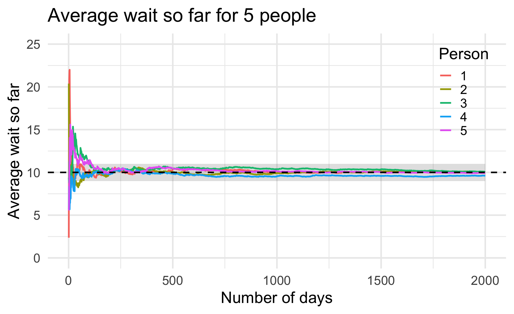
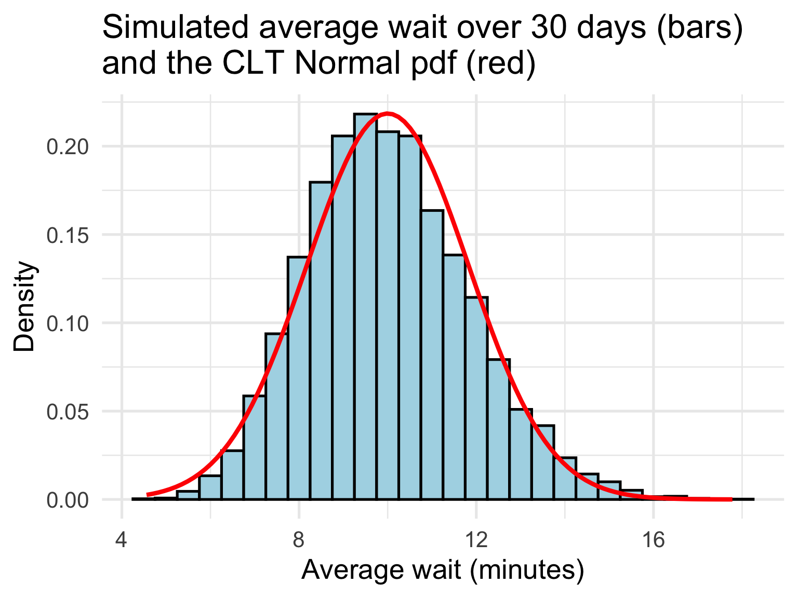
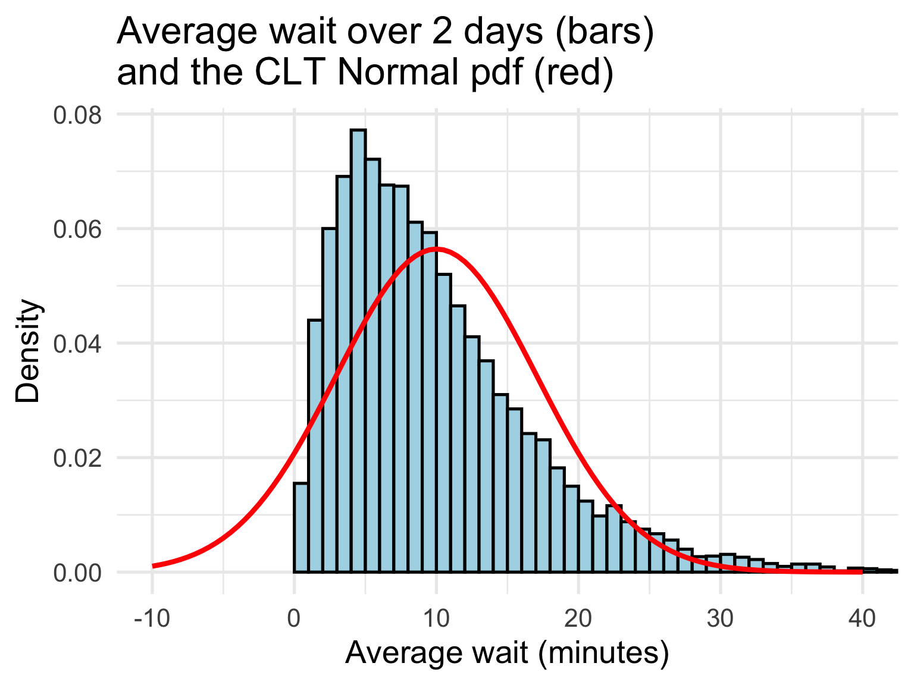
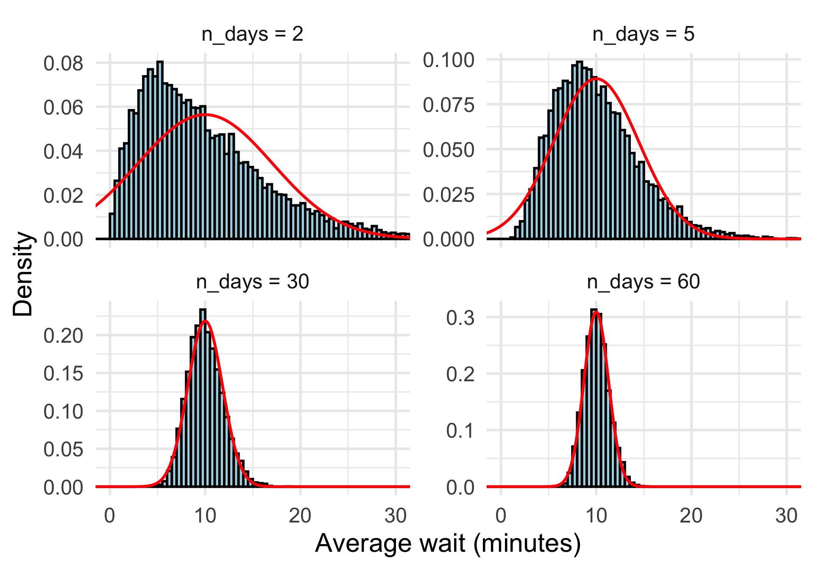

Explain the Law of Large Numbers and convergence in probability
Calculate probability of a sample mean using a population mean and variance with unknown distribution
Use the Central Limit Theorem to construct the Normal approximation of the Binomial and Poisson distributions
Convergence in probability
Lesson 1: the running proportion of heads settled near 0.5
Lesson 10: the running average of die rolls settled at \(\mathbb{E}[X] = 4.14\)
Today we make “settles at” precise with convergence in probability
Definition: Convergence in probability
A sequence of RVs \(Y_1, Y_2, \ldots\) converges in probability to a constant \(c\), written \(Y_n \xrightarrow{P} c\), if for every \(\varepsilon > 0\), \[P\big(|Y_n - c| > \varepsilon\big) \rightarrow 0 \quad \text{as } n \rightarrow \infty\]
In words: pick any small window \((c - \varepsilon, c + \varepsilon)\) around \(c\). As \(n\) grows, the chance that \(Y_n\) lands outside the window shrinks to 0.
Law of Large Numbers
Theorem 1: (Weak) Law of Large Numbers (LLN)
Let \(X_i\) be iid RVs with common mean \(\mu\) and variance \(\sigma^2 < \infty\), for \(i=1,2,\ldots,n\), and let \(\overline{X}_n = \frac{1}{n}\sum_{i=1}^n X_i\). Then \[\overline{X}_n \xrightarrow{P} \mu\]
The Law of Large Numbers is why long-run averages approximate \(\mathbb{E}[X]\), and why our simulations work!
Why is it true? The spread of \(\overline{X}_n\) shrinks to 0:
We say \(\overline{X}_n\) is a consistent estimator of \(\mu\): it converges in probability to the value it estimates. You will see this word a lot in BSTA 551!
Seeing the LLN: simulate
Simulate
Back to the bus from Lesson 13: each morning’s wait is \(X_i \sim \text{Exp}(1/10)\), so \(\mu = 10\) minutes
Follow 1,000 people for 2,000 mornings each, and track each person’s average morning wait so far, \(\overline{X}_n\)
Set the seed so we all get the same random numbers.
2
1,000 simulated people, each waiting for the bus for 2,000 days.
3
One row for every day for every person (2,000,000 rows), each with its own wait from rexp().
4
Like the running average in Lesson 10: within each person (group_by(sim)), cumsum(wait) is the total wait so far, and dividing by day gives the average so far, \(\overline{X}_n\) with \(n\) = day.
head(running_sims)
1
The first 6 days for person 1. The last column is their average wait so far. The # Groups line is a reminder that the table is still grouped by sim.
Keep only days 1, 10, 100, 500 and 2,000. %in% checks whether day is one of the values in the list.
2
One row of summaries for each of those days.
3
abs() is the absolute value. This is the proportion of people whose average so far is more than \(\varepsilon = 1\) minute away from \(\mu = 10\): it estimates \(P(|\overline{X}_n - 10| > 1)\).
4
The same with a smaller window, \(\varepsilon = 0.5\). It also shrinks to 0, just more slowly: halving \(\varepsilon\) takes about 4 times as many days, because the SD of \(\overline{X}_n\) is \(\sigma/\sqrt{n}\).
running_sims |>filter(sim <=5) |>ggplot(aes(x = day, y = running_avg, color =factor(sim))) +annotate("rect", xmin =0, xmax = max_days, ymin =9, ymax =11,alpha =0.2, fill ="grey40") +geom_line(linewidth =1) +geom_hline(yintercept =10, linetype ="dashed") +coord_cartesian(ylim =c(0, 25)) +labs(title ="Average wait so far for 5 people",x ="Number of days", y ="Average wait so far",color ="Person") +theme_minimal(base_size =20) +theme(legend.position ="inside",legend.position.inside =c(0.98, 0.98),legend.justification =c(1, 1))
4
Plot only the first 5 simulated people.
5
Days on the x-axis and the average so far on the y-axis, with one color per person.
6
Shade the window from 9 to 11 minutes (\(\mu \pm \varepsilon\)).
7
Draw each person’s running average, and a dashed line at \(\mu = 10\).
8
Zoom the y-axis, then add a title, axis labels and a larger-text theme.
9
Move the legend inside the plot. c(0.98, 0.98) is near the top right corner (0 is the left or bottom edge, 1 is the right or top edge), and legend.justification lines up the legend’s own top right corner there.

For both \(\varepsilon\), \(P(|\overline{X}_n - 10| > \varepsilon)\) shrinks toward 0, so \(\overline{X}_n \xrightarrow{P} 10\). A smaller \(\varepsilon\) just needs a larger \(n\).
Learning Objectives
Explain the Law of Large Numbers and convergence in probability
Calculate probability of a sample mean using a population mean and variance with unknown distribution
Use the Central Limit Theorem to construct the Normal approximation of the Binomial and Poisson distributions
The Central Limit Theorem
Theorem 2: Central Limit Theorem (CLT)
Let \(X_i\) be iid RVs with common mean \(\mu\) and variance \(\sigma^2\), for \(i=1,2,\ldots,n\). Then \[\sum_{i=1}^n X_i \rightarrow \text{N}(n\mu, n\sigma^2)\]
The \(\rightarrow\) here is shorthand for “is approximately, for large \(n\)”
Formally, the CLT is about convergence in distribution, written \(\xrightarrow{d}\): \[\frac{\overline{X}_n - \mu}{\sigma/\sqrt{n}} \xrightarrow{d} \text{N}(0, 1)\]
You will use this notation in BSTA 551
Extension of the CLT
Corollary 1
Let \(X_i\) be iid RVs with common mean \(\mu\) and variance \(\sigma^2\), for \(i=1,2,\ldots,n\). Then \[\overline{X}=\frac{\sum_{i=1}^n X_i}{n} \rightarrow \text{N}\Bigg(\mu, \dfrac{\sigma^2}{n}\Bigg)\]
LLN:\(\overline{X}_n \xrightarrow{P} \mu\) tells us where\(\overline{X}_n\) ends up
CLT:\(\overline{X}_n \approx \text{N}(\mu, \sigma^2/n)\) tells us how\(\overline{X}_n\) is spread around \(\mu\) along the way, with SD \(\sigma/\sqrt{n}\)
Example of Corollary in use
Example 1
According to a large US study, the mean resting heart rate of adult women is about 74 beats per minute (bpm), with standard deviation 13 bpm (NHANES 2003-2004).
Find the probability that the average resting heart rate for a random sample of 36 adult women is more than 3 bpm away from the mean.
Repeat the previous question for a single adult woman.
Example of Corollary in use: solution
Example 1
According to a large US study, the mean resting heart rate of adult women is about 74 beats per minute (bpm), with standard deviation 13 bpm (NHANES 2003-2004).
Find the probability that the average resting heart rate for a random sample of 36 adult women is more than 3 bpm away from the mean.
Repeat the previous question for a single adult woman.
Part 1:\(n = 36 \geq 30\), so we can use the CLT with \(\mu = 74\) and \(\sigma = 13\)
By the CLT, \(\overline{X} \approx \text{N}\Big(74, \dfrac{13^2}{36}\Big)\), so \(SD(\overline{X}) = \dfrac{13}{\sqrt{36}} \approx 2.17\)
“More than 3 bpm away from the mean” means \(\overline{X} < 71\) or \(\overline{X} > 77\)
pnorm() gives \(P(\overline{X} < 71)\) for a Normal with mean 74 and SD \(13/\sqrt{36}\). Doubling it adds the matching upper tail, \(P(\overline{X} > 77)\).
[1] 0.1661701
Part 2:\(n = 1 < 30\), so we cannot use the CLT
We don’t know the distribution of a single woman’s heart rate, so we can’t find this probability
Rule of thumb: \(n \geq 30\) to use the CLT
Example of CLT for exponential distribution
Example 2
Let \(X_i \sim \text{Exp}(\lambda)\) be iid RVs for \(i=1,2,\ldots,n\). Then \[\sum_{i=1}^n X_i \rightarrow\]
Seeing the CLT: waiting for the bus
Set up
Define the probability space and related random variables and events, including assumptions.
Same bus as in the LLN simulation: each morning’s wait is \(X_i \sim \text{Exp}(1/10)\) minutes
Random variable: the sample mean\(\overline{X}\), your average wait over \(n = 30\) days
Assumptions: waits on different days are independent and all \(\text{Exp}(1/10)\)
The exponential pdf is very skewed, but the CLT says \[\overline{X} \approx \text{N}\Bigg(10, \dfrac{10^2}{30}\Bigg), \quad \text{so } SD(\overline{X}) = \dfrac{10}{\sqrt{30}} \approx 1.83\]
Goal: check this with a simulation, and estimate \(P(\overline{X} > 12)\)
Seeing the CLT: simulate
Simulate
Run the simulation to generate outcomes according to the assumptions.
# A tibble: 1 × 3
average std_dev prob_over_12
<dbl> <dbl> <dbl>
1 10.0 1.82 0.140
CLT (Normal) approximation:
sigma_xbar <-10/sqrt(n_days)1-pnorm(12, mean =10, sd = sigma_xbar)
4
The CLT answer: save \(SD(\overline{X}) = 10/\sqrt{30}\), then use pnorm() for the Normal probability. (The exact answer is about 0.138, because the sum of 30 waits is \(\text{Gamma}(30, 1/10)\) from Lesson 13.)
[1] 0.1366608
Plot code
ggplot(xbar_sims, aes(x = xbar)) +geom_histogram(aes(y =after_stat(density)),binwidth =0.5,color ="black", fill ="lightblue") +geom_function(fun =function(x) dnorm(x, mean =10, sd = sigma_xbar),color ="red", linewidth =1.5) +labs(title ="Simulated average wait over 30 days (bars)\nand the CLT Normal pdf (red)",x ="Average wait (minutes)",y ="Density") +theme_minimal(base_size =20)
5
A histogram of the 10,000 simulated averages, scaled so the total area is 1, like a pdf (Lesson 8).
6
The Normal pdf the CLT predicts, from dnorm(), drawn in red.
7
Add a title and axis labels, with a clean theme and larger text.

Seeing the CLT: sensitivity analysis
Sensitivity analysis
Investigate how results change when assumptions or parameters of the model are altered.
What if we only average over 2 days? Only n_days changes (highlighted)
The only change: each simulation averages 2 waits instead of 30.
3
Exactly the same code as before. Because we wrote n_days instead of typing 30, each simulation now gets two rows automatically.
4
The CLT’s SD for \(\overline{X}\) is now \(10/\sqrt{2} \approx 7.07\).
Plot code
ggplot(xbar_sims, aes(x = xbar)) +geom_histogram(aes(y =after_stat(density)),binwidth =1, boundary =0,color ="black", fill ="lightblue") +geom_function(fun =function(x) dnorm(x, mean =10, sd = sigma_xbar),xlim =c(-10, 40),color ="red", linewidth =1.5) +coord_cartesian(xlim =c(-10, 40)) +labs(title ="Average wait over 2 days (bars)\nand the CLT Normal pdf (red)",x ="Average wait (minutes)",y ="Density") +theme_minimal(base_size =20)
5
Same plot code as before, with wider bars (binwidth = 1) and boundary = 0 so bars start at 0.
6
Draw the curve and the x-axis from −10 to 40, so we can see the Normal curve spill below 0, where no wait can be.
7
A new title for 2 days.

Sensitivity analysis
Investigate how results change when assumptions or parameters of the model are altered.
With 2 days, the Normal curve is a poor fit
Simulated \(P(\overline{X} > 12) \approx\) 0.31
CLT answer: 0.39
With 30 days, they agree: 0.14 vs. 0.14
Same code with n_days = 2, 5, 30, and 60 (right): as \(n\) grows, the histogram becomes bell-shaped, just like the CLT promises
The more skewed the \(X_i\), the larger \(n\) needs to be

Learning Objectives
Explain the Law of Large Numbers and convergence in probability
Calculate probability of a sample mean using a population mean and variance with unknown distribution
Use the Central Limit Theorem to construct the Normal approximation of the Binomial and Poisson distributions
CLT for Discrete RVs
Binomial RVs: Let \(X \sim \text{Binomial}(n,p)\)
\(X = \displaystyle\sum_{i=1}^n X_i\), where \(X_i\) are iid \(\text{Bernoulli}(p)\)
Rule of thumb: \(np\geq10\) and \(n(1-p)\geq 10\) to use Normal approximation
Poisson RVs: Let \(X \sim \text{Poisson}(\lambda)\)
\(X = \displaystyle\sum_{i=1}^n X_i\), where \(X_i\) are iid \(\text{Poisson}(\lambda/n)\)
Recall from Lesson 15 that if \(X_i \sim \text{Poisson}(\lambda_i)\) and \(X_i\) independent, then \(\sum_{i=1}^n X_i \sim \text{Poisson}(\sum_{i=1}^n \lambda_i)\)
Rule of thumb: \(\lambda \geq10\) to use Normal approximation
Larger example (1/7)
Example 3
Suppose that the probability of developing a specific type of breast cancer in women aged 40-49 is 0.001. Assume the occurrences of cancer are independent. Suppose you have data from a random sample of 20,000 women aged 40-49.
How many of the 20,000 women would you expect to develop this type of breast cancer, and what is the standard deviation?
Find the exact probability that more than 15 of the 20,000 women will develop this type of breast cancer.
Use the CLT to find the approximate probability that more than 15 of the 20,000 women will develop this type of breast cancer.
Use the CLT to approximate the following probabilities, where \(X\) is the number of women that will develop this type of breast cancer.
\(\mathbb{P}(15 \leq X \leq 22)\)
\(\mathbb{P}(X > 20)\)
\(\mathbb{P}(X < 20)\)
Find the approximate probability that more than 15 of the 20,000 women will develop this type of breast cancer—not using the CLT!
Use the CLT to approximate the approximate probability in the previous question!
Larger example (2/7)
Example 3
Suppose that the probability of developing a specific type of breast cancer in women aged 40-49 is 0.001. Assume the occurrences of cancer are independent. Suppose you have data from a random sample of 20,000 women aged 40-49.
How many of the 20,000 women would you expect to develop this type of breast cancer, and what is the standard deviation?
Larger example (3/7)
Example 3
Suppose that the probability of developing a specific type of breast cancer in women aged 40-49 is 0.001. Assume the occurrences of cancer are independent. Suppose you have data from a random sample of 20,000 women aged 40-49.
Find the exact probability that more than 15 of the 20,000 women will develop this type of breast cancer.
Larger example (4/7)
Example 3
Suppose that the probability of developing a specific type of breast cancer in women aged 40-49 is 0.001. Assume the occurrences of cancer are independent. Suppose you have data from a random sample of 20,000 women aged 40-49.
Use the CLT to find the approximate probability that more than 15 of the 20,000 women will develop this type of breast cancer.
Larger example (5/7)
Example 3
Suppose that the probability of developing a specific type of breast cancer in women aged 40-49 is 0.001. Assume the occurrences of cancer are independent. Suppose you have data from a random sample of 20,000 women aged 40-49.
Use the CLT to approximate the following probabilities, where \(X\) is the number of women that will develop this type of breast cancer.
\(\mathbb{P}(15 \leq X \leq 22)\)
\(\mathbb{P}(X > 20)\)
\(\mathbb{P}(X < 20)\)
Larger example (6/7)
Example 3
Suppose that the probability of developing a specific type of breast cancer in women aged 40-49 is 0.001. Assume the occurrences of cancer are independent. Suppose you have data from a random sample of 20,000 women aged 40-49.
Find the approximate probability that more than 15 of the 20,000 women will develop this type of breast cancer—not using the CLT!
Larger example (7/7)
Example 3
Suppose that the probability of developing a specific type of breast cancer in women aged 40-49 is 0.001. Assume the occurrences of cancer are independent. Suppose you have data from a random sample of 20,000 women aged 40-49.
Use the CLT to approximate the approximate probability in the previous question!